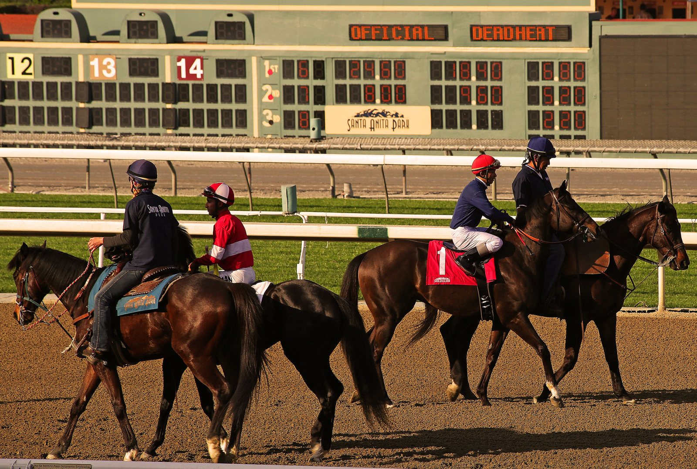

Chepstow cumple cien años: de base de la RAF a casa del Welsh Grand National
El hipódromo galés de Chepstow celebra un siglo de carreras con una cena del centenario, cien años después de abrir ante unos 20.000 espectadores en agosto de 1926.

Diez notables locales pusieron el dinero para comprar 370 acres ondulados de Piercefield Park, en Monmouthshire. Entre ellos, los lores Tredegar, Glanely y Queenborough. Allí trazaron una pista de casi dos millas donde Conca D'Oro, de Lord Harewood, ganó la primera carrera. Los obstáculos llegaron un año después.
El arranque no fue sencillo: los problemas económicos casi tumban el hipódromo en su primera década. Durante la Segunda Guerra Mundial se convirtió en base de la RAF, con bombarderos Wellington, y también ha acogido conciertos de músicos como Tom Jones. Hoy es uno de los pocos recintos que programan lisas y obstáculos todo el año.
Alan Johns, exjockey galés de obstáculos, lo resume así: "Chepstow gusta a todos los jockeys. Es una pista grande y galopante, con rectas muy largas y curvas amplias, y eso suele significar que gana el mejor caballo".
En octubre de 1933, Sir Gordon Richards ganó en Nottingham y al día siguiente se anotó seis de seis en Chepstow, antes de sumar cinco más en la misma reunión. Esas 12 victorias seguidas siguen siendo récord mundial.
La historia más cinematográfica es la de Dream Alliance, criado en un huerto cerca de Blackwood por Janet Vokes y propiedad de un sindicato de amigos que pagaban 10 libras a la semana. En 2008 sufrió un tendón seccionado. El sindicato pagó 20.000 libras por un tratamiento con células madre, y en 2009 el caballo ganó el Welsh Grand National a 20-1 con Tom O'Brien. Su historia llegó al cine en 2021 con Dream Horse.
El Welsh Grand National, la carrera mejor dotada de Gales, se corre en Chepstow desde 1949 en fechas navideñas. La edición de 2025 fue para Haiti Couleurs, preparado en Pembrokeshire por Rebecca Curtis y montado por Sean Bowen.
De cara al futuro, el hipódromo quiere consolidar un festival de obstáculos de tres días: el Welsh Racing Festival se estrenó el pasado octubre. Antes llega la cena del centenario, este jueves. Luke Admans, director ejecutivo del hipódromo, pone el foco en la plantilla: "Tenemos una señora que lleva 53 años trabajando en la zona de socios".
— Redacción de Galope al Día